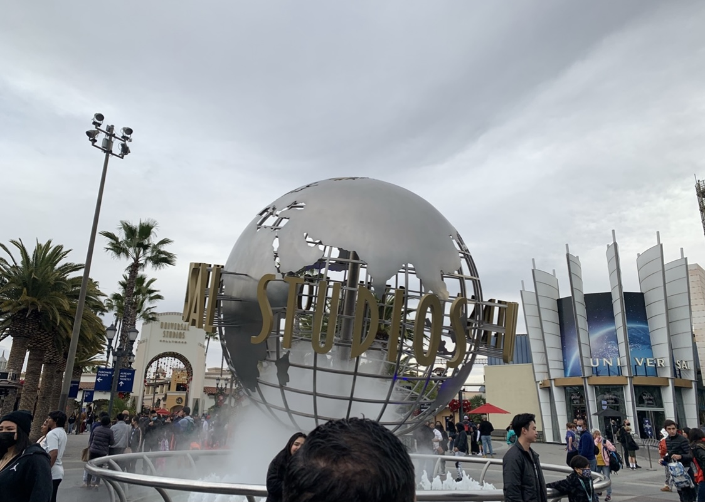
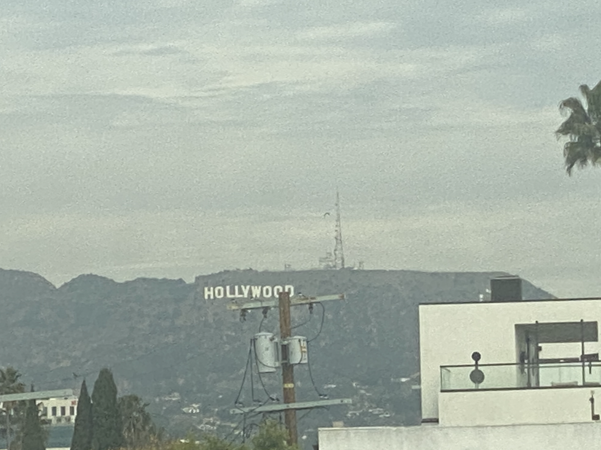
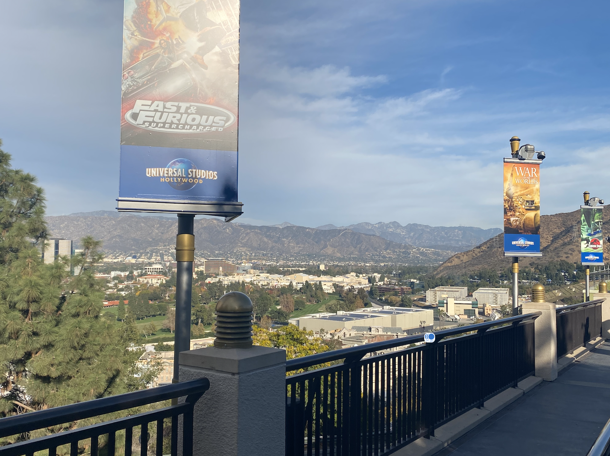
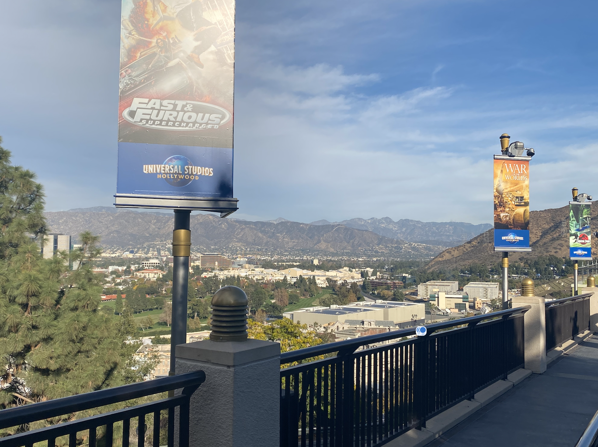
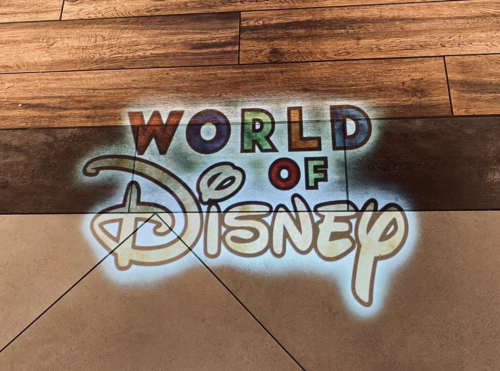
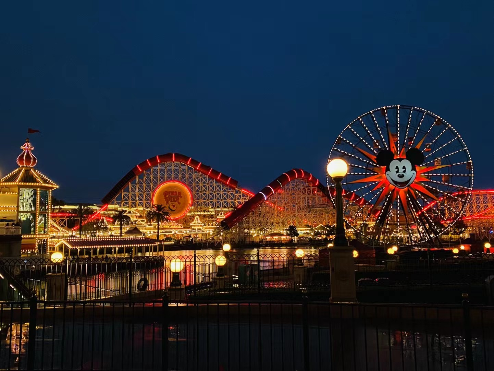
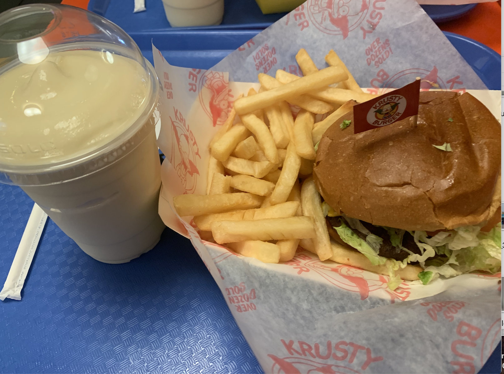
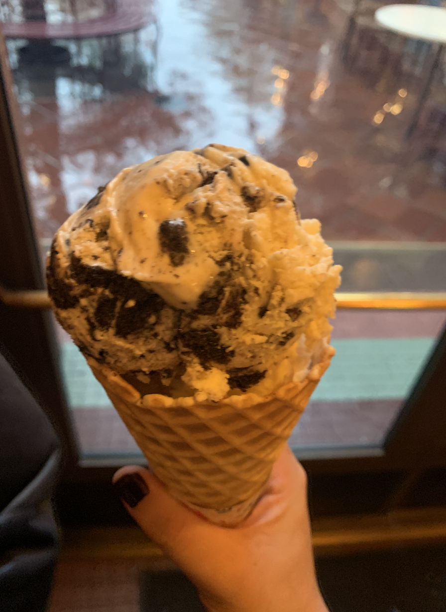

During our winter break vacation, my friend and I hit it off to visit Los Angeles. We visited Universal Studios and the Disneyland where movie fans are always yearning for.

HOLLYWOOD!!! This picture of Hollywood logo was took when we are in the hotel.
One of the best thrill ride located in The Wizarding World of Harry Potter. You would join Harry Potter and his friends on an unforgettably thriling adventure, coming face-to-face with an array of magical creatures. Get ready to soar!!!

This is the view we took from the hills of Universal Studios. Mountains, houses, and trees...
 

Disney California Adventure Land. Disneyland must be the most yearning place for every people when they are chirldren. Although I am already twenty years old, it is still a place that my heart yearns for. It is the place where fairy tales can come true, where people can be grateful and embrace goodness, where people can believe that goodness will always triumph over evil, and where people can believe that there will be good rewards for their efforts. People all across the world come to this place, laughig, playing, and celebrating.
Fun facts: We did four roller coasters in a row at Disneyland.
 Who can withstand burger and milkshake? West coast is always famous for burgers and milkshakes. I definitely tried them! Aswesome taste!
Who can withstand icecream? Icecream with cookie is definitly one of my favorite kind.
